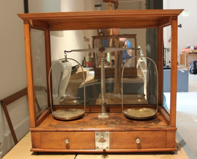

Bilancia analitica
Scuola di provenienza: Istituto agrario "F. De Sanctis", Avellino
Settore: Meccanica
Costruttori: Opificio Gomba Napoli, Napoli, Italia
Materiali: Legno di noce, vetro, ottone
Accessori: Piatti in ferro, pesetti in ottone
Stato di conservazione: Buono
Descrizione: Le bilance di precisione sono racchiuse in apposite custodie per evitare anche le minime correnti d’aria. Questa bilancia non è dotata di una pesiera classica con pesi ordinati e custoditi, ma di una scatola con vari tipi di pesetti, alcuni artigianali altri molto particolari. Il peso da 2,5 non è ordinario; col Regno d'Italia sono ammessi solo pesi da 1, 2, 5, 10, 20, 50, 100 grammi, non erano tollerati quelli da 2,5 g. Questo peso potrebbe essere stato creato per un uso particolare, non riconducibile, certamente, ad un impiego commerciale, ovvero per la compravendita. Gli altri due pesi sono invece dei pesi monetali, che venivano utilizzati per verificare il peso di una moneta, quando il valore della stessa era intrinseco alla quantità di metallo prezioso (oro o argento), che la costituiva e non al solo valore nominale come accade al giorno d'oggi. Entrambi i pesi nominali vengono creati durante il Regno di Sardegna: il peso doppia da lire 40 viene coniato a partire dal 1826; era una moneta d'oro di 12,90 g. Il peso da 100 lire viene coniato a partire dal 1832, anch’essa sotto forma di moneta d'oro del peso di 32,26 grammi, che dovrebbero avere la medesima massa delle monete indicate. Tali monete hanno una lunga vita e un lungo corso (il pezzo da 100 lire mantiene lo stesso peso fino al 1931). Sugli esemplari esposti si vedono dei bolli di verifica che risalgono al trentennio compreso tra il 1861 e il 1890. Sono molti i nominali che si chiamano “doppia” (la doppia di Spagna, la doppia di Genova, la doppia di Venezia, la doppia di Firenze, la doppia di Milano...). Il nome “doppia” proviene dalla Spagna ed indica un nominale, che aveva il valore di due scudi d'oro (doppio scudo); lavorato in Italia, per la prima volta, a Milano sotto Carlo V. In seguito, divenne moneta a sé, senza aver più alcun legame con lo scudo d'oro, ma continuando ad essere considerata come base della monetazione aurea. In riferimento alla coniazione del 1826, oltre alla doppia da lire 40 (cioè una moneta del peso di 12,90 g d'oro avente valore di 40 lire piemontesi) esisteva anche la doppia da lire 20 (del peso di 6,45 g e valore di 20 lire piemontesi) e una quadrupla da lire 80 del peso di 25,806 g